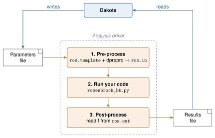

Connecting Your Code: The Analysis Driver
To connect Dakota with your simulation, you provide one analysis driver: a program that Dakota runs once for each evaluation. In the most common interfacing format, Dakota gives the analysis driver two file names as arguments, a parameters file to read and a results file to write. Analysis drivers are most often scripts (e.g., Python, MATLAB, Bash or Powershell), but you can also build one graphically in the Dakota GUI.
This page builds an analysis driver for a black-box version of the Rosenbrock
example from The example: Rosenbrock. Instead of using the function
built into Dakota, it runs rosenbrock_bb.py, a small program that behaves
like an engineering simulation code: it reads an input deck, ros.in, and
writes a log, ros.out.

Fig. 7 Common steps for a single evaluation with an analysis driver: pre-processing to generate, a valid input file for the simulation code, running the simulation, and post-processing to extract responses to return to Dakota.
The three jobs of an analysis driver
Every analysis driver does the same three things, in order:
Pre-process. Put this evaluation’s parameter values into your code’s input. The usual way is a template file: a copy of your input file with placeholders, such as
{x1}, that dprepro or pyprepro fills in with the values from the parameters file.Run. Run your simulation code.
Post-process. Extract the responses from your code’s output, and write them to the results file.
What Dakota writes and what it expects
For each evaluation, Dakota writes a parameters file. Here is the first one
from the Rosenbrock parameter study, where x1 and x2 are both -2:
2 variables
-2.000000000000000e+00 x1
-2.000000000000000e+00 x2
1 functions
1 ASV_1:response_fn_1
2 derivative_variables
1 DVV_1:x1
2 DVV_2:x2
0 analysis_components
1 eval_id
The first lines give the variable values, each followed by its name. The
1 in front of ASV_1:response_fn_1 means Dakota wants the value of the
first response. The remaining lines matter only for more advanced studies,
such as those that need derivatives. You rarely need to read this file
yourself: dprepro and the dakota.interfacing Python module read it for
you.
Your analysis driver writes a results file with one line per response, holding its value. The name after the value is optional:
3.6090000000000000e+03 response_fn_1
Learn more: Parameter File Format, Dakota Results File Data Formats.
A minimal analysis driver
Here is a complete analysis driver for the black-box Rosenbrock example, in three languages. Each version does the same three jobs, under the same headings. Choose the tab for the language you want to use.
This version uses Dakota’s dakota.interfacing Python module to read
the parameters file, fill in the template, and write the results file.
#!/usr/bin/env python3
# Analysis driver for the black-box Rosenbrock example.
# Dakota runs it as: python3 driver.py params.in results.out
import subprocess
import sys
import dakota.interfacing as di
# Read the parameters file Dakota wrote, and set up the results file.
params, results = di.read_parameters_file()
# --------------
# PRE-PROCESSING
# --------------
# Put this evaluation's x1 and x2 into the simulation's input file.
di.dprepro(template="ros.template", parameters=params, output="ros.in")
# ---------
# EXECUTION
# ---------
subprocess.run([sys.executable, "rosenbrock_bb.py"], check=True)
# ---------------
# POST-PROCESSING
# ---------------
# Find the function value in the simulation's output, and return it to
# Dakota as the first (and only) response.
with open("ros.out") as f:
for line in f:
if "Function value" in line:
value = float(line.split("=")[1])
results[0].function = value
results.write()
This version uses the dprepro command to fill in the template, and
grep and awk to find the value in the output.
#!/usr/bin/env bash
# Analysis driver for the black-box Rosenbrock example.
# Dakota runs it as: driver.sh params.in results.out
params=$1
results=$2
# --------------
# PRE-PROCESSING
# --------------
# Put this evaluation's x1 and x2 into the simulation's input file.
dprepro "$params" ros.template ros.in
# ---------
# EXECUTION
# ---------
python3 rosenbrock_bb.py
# ---------------
# POST-PROCESSING
# ---------------
# Find the function value in the simulation's output, and return it to
# Dakota as the first (and only) response.
grep 'Function value' ros.out | awk '{print $4}' > "$results"
Note
dprepro runs with the python command. If your system has only
python3, use dprepro3 instead, which runs dprepro with
python3.
This version runs dprepro with Python to fill in the template, and
uses Select-String to find the value in the output.
# Analysis driver for the black-box Rosenbrock example.
# Dakota runs it as: powershell.exe -File driver.ps1 params.in results.out
$params = $args[0]
$results = $args[1]
# --------------
# PRE-PROCESSING
# --------------
# Put this evaluation's x1 and x2 into the simulation's input file.
$dprepro = (Get-Command "dprepro").Path
python3 $dprepro $params ros.template ros.in
# ---------
# EXECUTION
# ---------
python3 rosenbrock_bb.py
# ---------------
# POST-PROCESSING
# ---------------
# Find the function value in the simulation's output, and return it to
# Dakota as the first (and only) response.
$line = Select-String -Path ros.out -Pattern "Function value"
$value = ($line.Line -split "=")[1].Trim()
Set-Content -Path $results -Value $value -Encoding ASCII
The template, ros.template, is a copy of the simulation’s input deck with
placeholders where the variable values go. Its last lines are:
variable 1 {x1}
variable 2 {x2}
end
Prefer a graphical tool? You can build an analysis driver as a workflow in the Dakota GUI’s Next-Gen Workflow tool instead of writing a script. If your code reads a text input file, the GUI’s Markup File tool helps you create the template, and the GUI can also read your model’s parameters and responses from INI, JSON or YAML files.
Telling Dakota about the driver
You point Dakota to your analysis driver in the interface block.
The value of analysis_drivers is the command Dakota runs, which depends on the
driver’s language:
Analysis driver |
|
|---|---|
Python |
|
Bash |
|
Windows (PowerShell) |
|
On Linux and macOS, a Python driver that starts with #!/usr/bin/env python3
and is executable can also be named directly, as 'driver.py'.
A complete interface block that runs the Python driver looks like this:
{
"interface": [
{
"analysis_drivers": {
"drivers": ["python3 driver.py"],
"interface_type": {
"fork": {
"parameters_file": "params.in",
"results_file": "results.out",
"file_save": true,
"work_directory": {
"named": "workdir",
"directory_tag": true,
"directory_save": true,
"link_files": ["templatedir/*"]
}
}
}
},
"concurrency": {
"asynchronous": {
"evaluation_concurrency": 4
}
}
}
]
}
interface
analysis_drivers = 'python3 driver.py'
fork
parameters_file = 'params.in'
results_file = 'results.out'
file_save
work_directory
named 'workdir'
directory_tag
directory_save
link_files = 'templatedir/*'
asynchronous
evaluation_concurrency = 4
Here is what each part does:
forkruns the analysis driver as a separate process, and exchanges data with it through files.parameters_fileandresults_filename those files. Without them, Dakota uses temporary names.file_savekeeps the parameters and results files after each evaluation, which helps when you’re debugging.work_directoryruns each evaluation in its own folder, hereworkdir.1,workdir.2and so on (namedsets the name,directory_tagadds the number). That keeps evaluations from overwriting each other’s files.link_fileslinks the files every evaluation needs into each folder: here, everything in thetemplatedirfolder (the driver, the template and the simulation).copy_filescopies them instead.directory_savekeeps the folders afterwards.asynchronouswithevaluation_concurrencyruns up to four evaluations at the same time.
In the JSON format, asynchronous sits inside a concurrency group key.
See Group keys.
Learn more: Interfaces, Simulation File Management.
Test your analysis driver before running Dakota
Run your analysis driver by hand on a sample parameters file before you run a
whole study. Save the parameters file shown above as params.in, in the
folder with your driver, template and simulation, and run:
python3 driver.py params.in results.out
./driver.sh params.in results.out
powershell.exe -File driver.ps1 params.in results.out
Then check that results.out holds the value 3609, which is the Rosenbrock
function at (-2, -2).
If it doesn’t work, check these common problems:
Permissions. On Linux and macOS, a driver you name directly, such as
driver.sh, must be executable (chmod +x driver.sh) and start with a#!line.Python command. Some systems have
python3but nopython. Use the command that exists on yours, and usedprepro3instead ofdpreproif there’s nopython.Finding Dakota’s tools.
dprepromust be on yourPATH, and thedakota.interfacingmodule must be on yourPYTHONPATH. See Setting Your Environment.Paths inside work directories. Each evaluation runs in its own folder, so relative paths to your template or simulation must work from there. Use
link_filesorcopy_filesto put them in place.Results file format. One value per line, one line per response, in the order of the responses block.
Where to look when an evaluation fails. Dakota’s console output shows the failing evaluation. With
file_saveanddirectory_save, its parameters file, results file and the simulation’s own output stay behind for you to inspect.
Other ways to connect
A file-based analysis driver works with nearly any code in any language, so it’s where most users start. Dakota can also connect to your code in other ways:
Approach |
How data moves |
When to use it |
|---|---|---|
Analysis driver with |
Through files |
Any code in any language. The default, and the focus of this page. |
In memory, via |
Models already written in Python; very many or very fast evaluations,
where file and process overhead dominates; returning analytic
gradients. Use the |
|
In memory, through C++ or Python calls |
Embedding Dakota in your own application. |
With the Python direct interface, Dakota calls a function in your Python
module, with no parameters or results files. The recommended way to write
that function is with the @python_interface decorator from
dakota.interfacing, which passes friendly Parameters and
Results objects instead of raw dictionaries. Here is the same
Rosenbrock function, in a file named rosen_direct.py:
import dakota.interfacing as di
@di.python_interface
def rosenbrock(params, results):
x1 = params["x1"]
x2 = params["x2"]
results["response_fn_1"].function = 100.0 * (x2 - x1**2)**2 + (1.0 - x1)**2
return results
The decorator handles all translation between Dakota’s native parameter and result dictionaries and the higher-level objects, so your function works directly with named variables and named responses.
The interface block names the module and function, and selects python
instead of fork:
{
"interface": [
{
"analysis_drivers": {
"drivers": ["rosen_direct.rosenbrock"],
"interface_type": {
"python": {}
}
}
}
]
}
interface
analysis_drivers = 'rosen_direct.rosenbrock'
python
This short function returns only function values, which is enough for studies that don’t ask for derivatives. The Python direct interface may not be included in pre-built downloads, and must be enabled when compiling Dakota from source.
Next steps
Deep Dive into Dakota’s Analysis Driver Process covers the parameters file format in detail, a compiled analysis driver, and tighter forms of coupling.
Building a Black-Box Interface to a Simulation Code shows more ways to pre-process and post-process files, and The Python dakota.interfacing module documents the Python module.
The cantilever beam example is a more realistic engineering example, with several responses.
Video Resources
Title |
Link |
Resources |
|---|---|---|
Interfacing a User’s Simulation to Dakota (Part 1) |
||
Interfacing a User’s Simulation to Dakota (Part 2) |